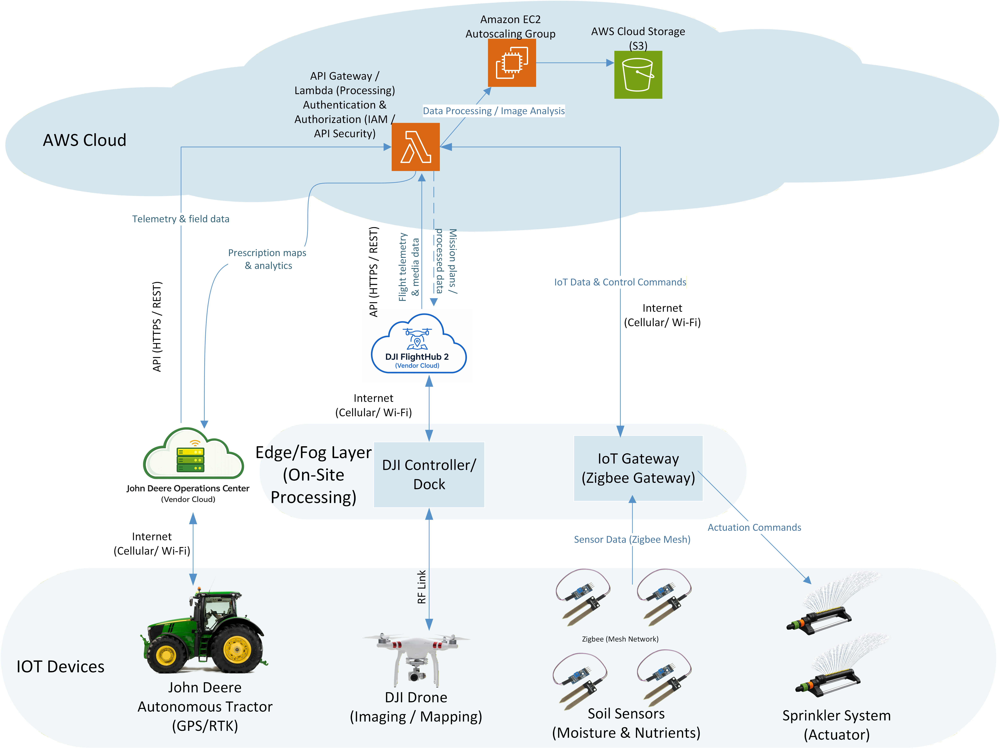

Project objective
Improve resource efficiency, monitoring, automation, resilience, and farm productivity while evaluating cost, security, failure behavior, scaling, and sustainability.
What I produced
- Compared earlier manual and remote-controlled approaches with modern autonomous and sensor-driven agriculture.
- Designed field sensors, drones, edge gateways, an autonomous tractor, wireless and cellular links, and AWS services.
- Analyzed processing placement between devices, edge nodes, and cloud resources.
- Evaluated component failures, load levels, scaling, security risks, sustainability, and validation methods.
Key decisions
- Process time-sensitive data at the edge when cloud latency or connectivity could disrupt operations.
- Use cloud resources for long-term storage, aggregate analytics, and more complex processing.
- Apply Zero Trust principles because field devices and remote links expand the attack surface.
- Design for intermittent connectivity so farm operations can continue locally.
Edge + cloudDistributed processing design
Multiple device typesSensors, drones, and autonomous equipment
Resilient operationLocal behavior during connectivity loss
Validation and analysis
- Defined validation plans for sensors, communication, processing, security, and failover.
- Analyzed system behavior under light and heavy load.
- Compared old and new technology costs and long-term operational benefits.
What I would improve next
- Add a detailed threat model and device identity lifecycle.
- Quantify bandwidth, battery, and storage requirements.
- Prototype the sensor-to-edge data path with a small hardware kit.